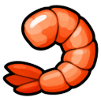

🍤
The Hollow Larder
Ashvale's larder is empty. Cook up a batch of shrimp for the villagers.
Objectives
- Hand in

Shrimp ×5
Rewards
- 🪙 150 coins
- 200 🍖 Cooking XP
Ashvale's larder is empty. Cook up a batch of shrimp for the villagers.

Shrimp ×5